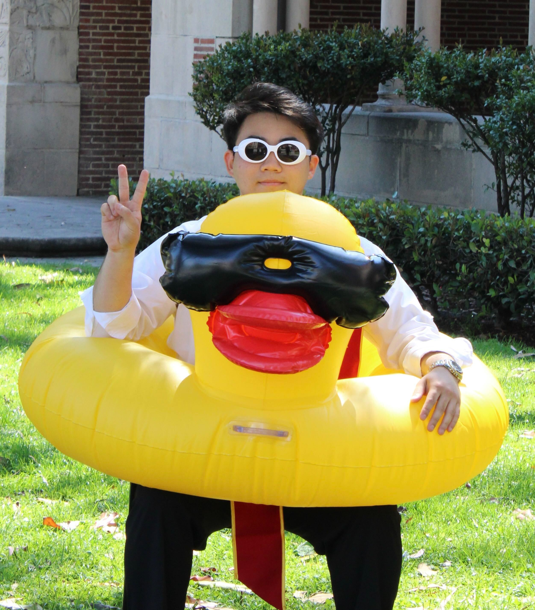

I am a PhD candidate in Bioengineering at UCSF–UC Berkeley, developing tools for mechanics-guided computational modeling and design of multiscale biological systems. My research focuses on highlighting the powers and limitations of computational modeling, and using these insights to develop new approaches for understanding and engineering biology.
Outside of research, I am the co-founder and CSO of Revilico, a startup building "the final operating system of pharma" to democratize drug discovery. beyond work, i'm fascinating by a multitude of random hobbies and my innate interest in trying to understand human behaviors and the human experience, especially in the world of ai.